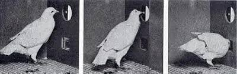
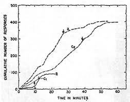
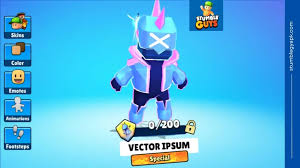
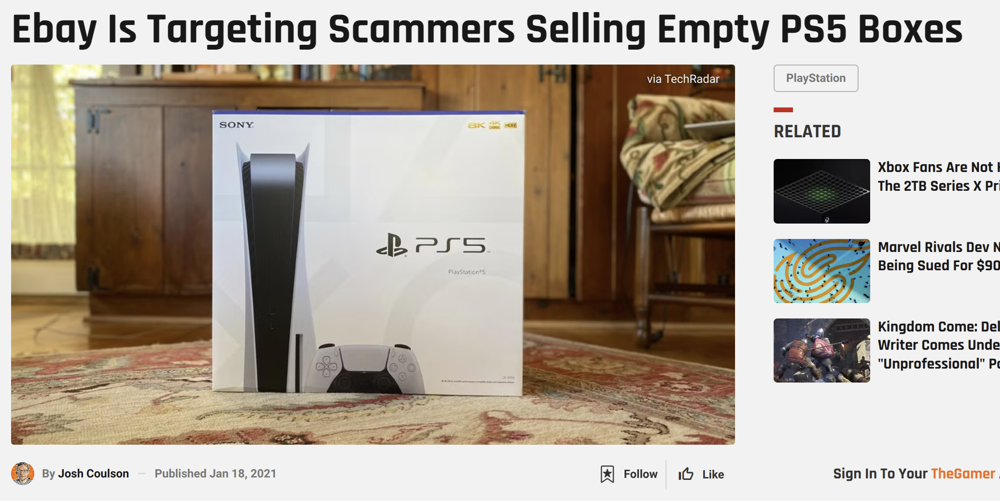
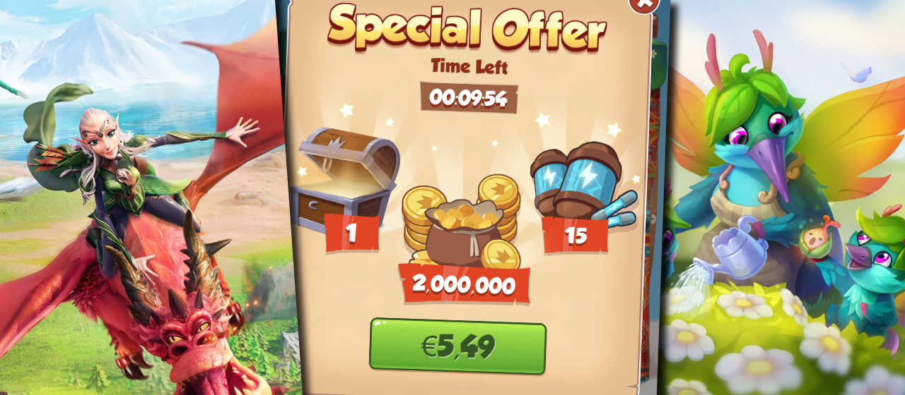
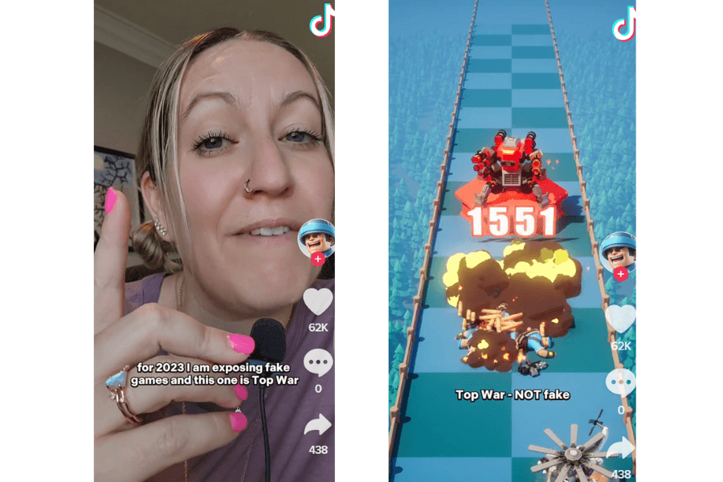
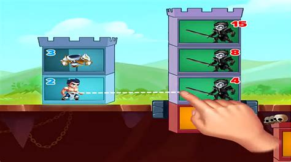
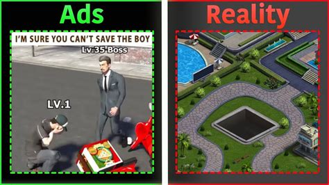

Breaking big problems into small pieces…
How how psychology researchers tackle complex problems
Overview
- How do do psychology researchers tackle complex problems?
- How pigeons helped get people to spend money to their in mobile games
- A psychology research lab
- Computer-based tasks in the lab
- Brain imaging demonstration
How do do psychology researchers tackle complex problems?
Focus: Harmful gambling
Gambling can be examined at multiple levels
Social: Social norms around gambling, peer influences, accessibility of gambling (e.g., online platforms), societal costs.
Relational: Impact of gambling on family and relationships, co-dependency.
Behavioral: Compulsive gambling, reinforcement, addiction.
Cognitive: Cognitive distortions (e.g., gambler’s fallacy, illusion of control), risk assessment, decision-making processes.
Neurological: Reward pathways in the brain, neurotransmitter involvement (e.g., dopamine), brain activity during gambling.
How do we tackle such a complex problem?
- Break it down into smaller pieces.
- Use different methods to examine each piece.
- Integrate knowledge across levels.
How pigeons helped get people to spend money to their in [mobile] games
How combining pieces of knowledge can help us understand the complex problem
Problem: The manipulation of people to keep them engaged with games/apps (and spend money)
Does anyone recognise this issue? Who is aware of the term “dark patterns”?
What do all of the following images have in common?
What do all of these images have in common? Each of these images represents a particular type of manipulation that is being combined to hook people into games
Operant conditioning
- Conditioning through reinforcement of responding
- If we receive a reward for an action, the behaviour is reinforced.

Reinforcement schedules
- Variable-ratio reinforcement schedules are most useful in increasing responding

Variable ratio reinforcement in games
Variable ratio reinforcement in games
Variable ratio reinforcement in games

People are not pigeons…
People are easier to manipulate..
Our perception of value can be manipulated
Perceived scarcity can drive us to value something more than we might otherwise do

Loss aversion is a strong driver of our behaviour.
Artificial scarcity is used to create F.O.M.O
You might think that people would be savvy, and realise what is happening. But our ability to reflect is often short-circuted by tapping into another process
Type 1 and Type 2 thinking systems
Dual process theory suggests there are two parallel cognitive processing systems, an intuitive and an analytic system.
Intuitive thinking is more immediate and emotion-based.
Analytic thinking happens later and is more rational and logical.
If you can get someone to act quickly, they might act in a way that is less rational and more led by emotions.
Limited time offers!

By creating artificial scarcity (FOMO) and getting people to act quickly (limited time), you can get them to act more emotionally and less rationally.
This can be enhanced if you manipulate people’s emotional state too.
The affect heuristic
Our decisions are often made based on our current emotional state
This “gut feeling” often leads to biased judgments or even disregarding of information.
Familiarity through exposure is sufficient to generate positive affect.
This means that just by exposing us to something repeatedly, we are likley to have a more positive feeling about it.
Influencers and fake games



Combination of manipulation techniques
- Addictive gameplay (Variable ratio reinforcement)
- Artificial scarcity in game stores (value framing)
- Limited time offers in game stores (type 1 thinking)
- Influencers and fake games in ads (affect heuristic)
How a psychology research lab works to tackle complex problems
Beahvioural / cognitive tasks in the lab
We use computer-based tasks to examine decision-making, risk-taking, and cognitive biases.
We can measure reaction times, accuracy, and other behavioural measures.
We can also measure physiological responses (e.g., heart rate, skin conductance).
What pieces of gambling behaviour does the following task examine?
What pieces of gambling behaviour does the task examine?
This is a version of the Cambridge Gambling Task, which examines decision-making under risk. This includes:
- Risk perception
- Risk taking
- Adjusting behaviour based on consequences
We can combine this with other measures to get a more complete picture.
Brain Imaging Demonstration
Functional Near Infrared Spectroscopy
- Uses light to measure blood oxygenation in the brain
- This can tell is which areas of the brain are active at any given time
- The prefrontal cortex is involved in thinking and decision-making
I need a volunteer!
Summary
- We tackle complex problems by breaking them into smaller pieces
- Combining those pieces of knowledge give us the big picture
- In a lab, we have many projects running at the same time looking at a given topic
- We design computer-based tasks to examine specific elements of behaviour and cognition
- fNIRS is one of our neuroimaging tools to examine the brain during behaviour / cognition